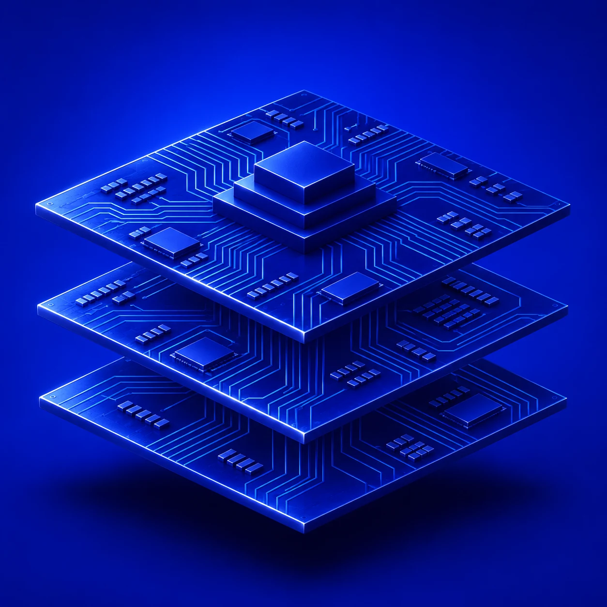

Software a medida
Diseñamos aplicaciones y herramientas internas que se adaptan a tus procesos y pueden evolucionar con tu equipo.
ConsultarEstudio de ingeniería digital
Creamos software, conectamos tus sistemas y automatizamos el trabajo repetitivo para que tu equipo pueda centrarse en lo que hace mejor.

Servicios
Desde una integración puntual hasta una plataforma a medida, partimos de cómo trabaja tu equipo.
Diseñamos aplicaciones y herramientas internas que se adaptan a tus procesos y pueden evolucionar con tu equipo.
ConsultarConectamos las herramientas que ya usas y automatizamos tareas como sincronizar registros, enviar avisos o generar informes.
ConsultarReunimos datos dispersos y creamos paneles que permiten seguir indicadores sin recopilar la información a mano.
ConsultarBeneficios
Reduce la doble digitación, los traspasos entre herramientas y los errores que aparecen al copiar información.
Consulta el estado de tus procesos y revisa los mismos indicadores con todo tu equipo.
Recibe código documentado y una entrega guiada para que tu equipo pueda operar y ampliar lo que construimos.
Sobre Vector
Somos un estudio que reúne ingeniería de software, diseño de producto y análisis de datos. Trabajamos junto a las personas que usarán la solución para entender qué les quita tiempo y qué necesitan tener a la vista.
Definimos el alcance contigo, construimos por etapas y dejamos todo documentado para que tu equipo pueda seguir trabajando con autonomía.
Cuéntanos qué necesitasContacto
¿Qué proceso quieres mejorar? Describe cómo funciona hoy y qué te gustaría conseguir.